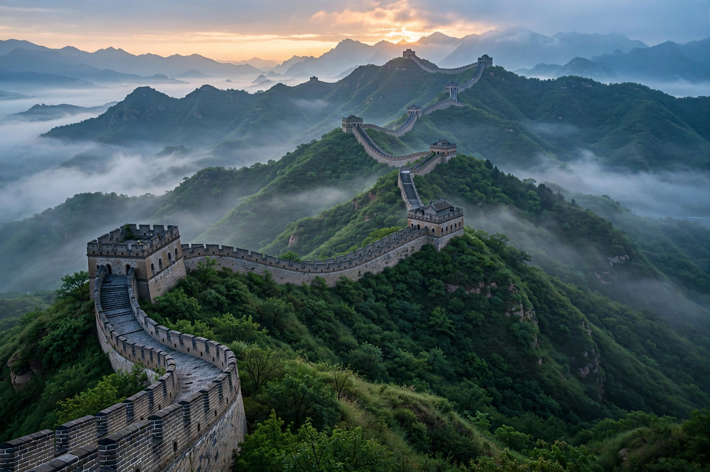

China
From Wikipedia, the free encyclopedia

Note: this entry recreates the article on the People's Republic of China. China, officially the People's Republic of China (PRC), is a country in East Asia and the world's second-most populous (about 1.41 billion), governed by the Chinese Communist Party as a one-party socialist republic since its proclamation by Mao Zedong on 1 October 1949. It is the world's second-largest economy by nominal GDP, the largest by Purchasing power parity, the largest manufacturer and exporter, and a permanent member of the UN Security Council.
Geography and people
China spans 9.6 million km² from the Himalayas (Mount Everest on the Nepal border) to the Pacific, encompassing deserts, the loess plateau, the Yangtze and Yellow river plains and subtropical south. Its population is 91% Han Chinese, with 55 officially recognised ethnic minorities; Mandarin is the standard language. Urbanisation passed 65% in the 2020s, with megacities including Shanghai, Beijing (the capital), Shenzhen and Guangzhou.
History in brief
The PRC emerged from the resumed Chinese Civil War after Japan's defeat; the Republic of China retreated to Taiwan, whose status remains the central unresolved question. Land reform and campaigns (Great Leap Forward, 1958–62, with a famine killing tens of millions; the Cultural Revolution, 1966–76) were followed after 1978 by Deng Xiaoping's 'reform and opening', which produced four decades of near-double-digit growth, WTO accession (2001), and the rise of a vast middle class — while political liberalisation, expected by some, did not follow.
Government and world role
The CCP, led by the General Secretary (Xi Jinping since 2012, also president and military commission chair), controls state, army and courts; the National People's Congress is the formal legislature. China is the largest trading partner of most nations, fields the Belt and Road Initiative, rivals the United States in technology and military power (the PLA is the world's largest active force), and is the largest carbon emitter — and the largest installer of renewables. Its human-rights record (Xinjiang, Hong Kong, Tibet) and territorial claims (South China Sea, Taiwan) structure its international conflicts.